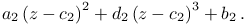

Centroid of local neighborhood
Calculation of the centroid in a local image neighborhood is a very fast method for sub-pixel molecule localization and is used in [1]. The algorithm does not estimate the intensity or imaged size of molecules, and is sensitive to noise. The main idea is simply to calculate the mean pixel positions weighted by the intensity of the image data. The sub-pixel refinement of the coordinates is calculated as
|  |
References
- [1] (2010) QuickPALM: 3D real-time photoactivation nanoscopy image processing in ImageJ. Nature Methods 7 (5), pp. 339–340. External Links: Document Cited by: Centroid of local neighborhood.
Generated on Sun Oct 4 04:17:38 2015 by LaTeXML ![[LOGO]]()